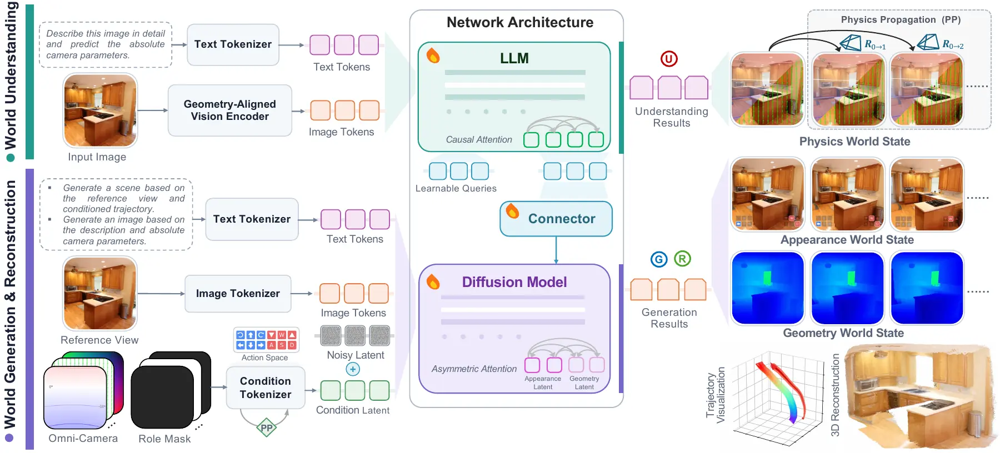
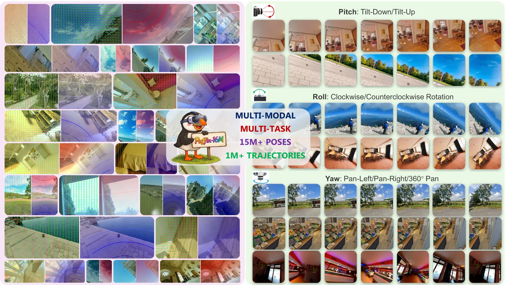
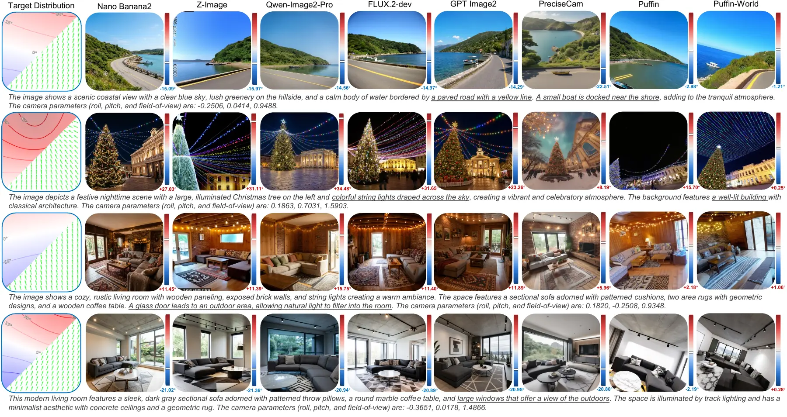
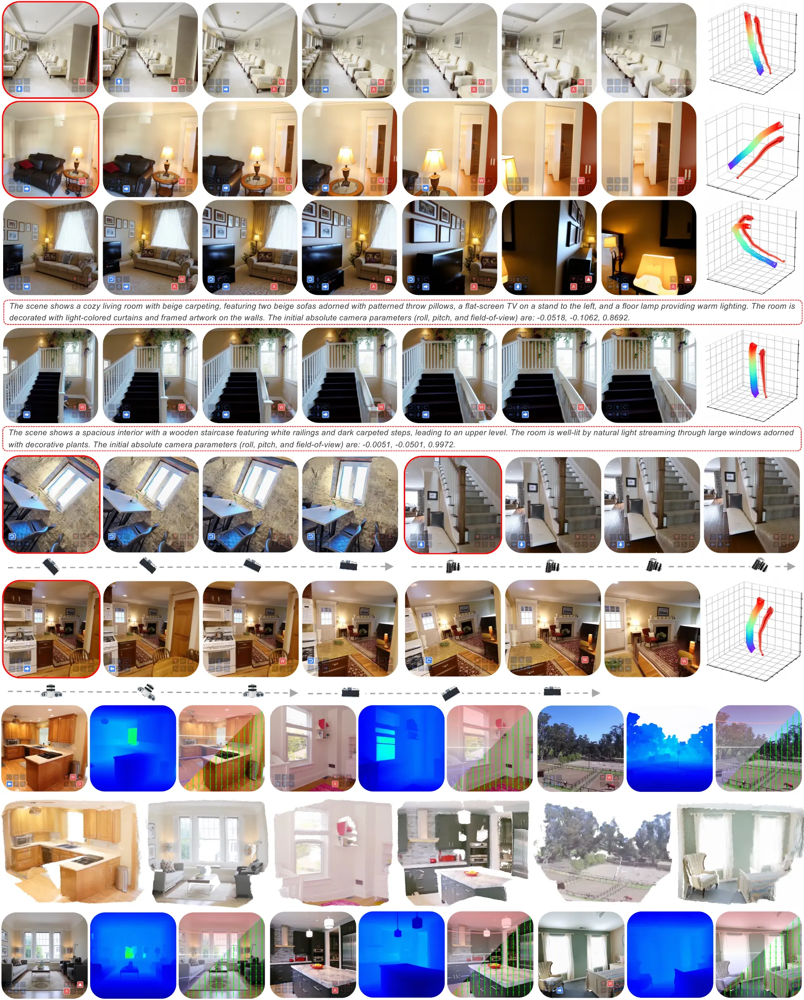
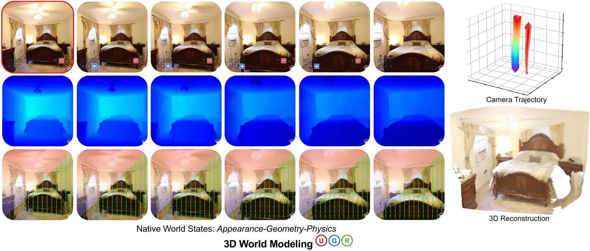

一句话与三种世界状态
论文的定位不是"再强一点的图像/视频生成器"，而是让一个多模态模型同时具备 物理理解、自由视角模拟、3D 生成与重建，且不依赖任何外部离线模块。
Puffin-World 用 native 3D world states 把"相机在世界里的绝对朝向"变成显式可建模、可生成、可传播的量：physics 给绝对锚点，geometry 给结构，appearance 给观感；再由一个 vision encoder + LLM + diffusion 的统一框架同时输出理解、生成与重建。
gravity field + latitude map。编码场景竖直性、地平线，以及每条视线的仰角——这是唯一能把观测锚到真实世界的状态，也是相对相机表示（Plücker 等）缺失的东西。
depth。既暴露外观背后的 3D 结构，也提供从"生成的多视角观测"到"直接 3D 重建"的桥梁；与 appearance 共享同一个 VAE latent 空间。
RGB 图像与序列。关键在于它不是独立生成的，而是与相机条件、几何条件联合去噪产出。
它针对的两条既有路线
| 既有路线 | 做到了什么 | 缺什么 |
|---|---|---|
| 生成式世界模型 视频 / 多视角 diffusion | 视觉保真度与可控制性大幅提升 | 几乎只在 appearance 层建模：相机物理朝向与场景几何都隐含；控制主要用相对运动，没有全局物理参照 → 同一相对轨迹可对应多个绝对朝向，长时程 / 大旋转下出现 orientation drift |
| 统一多模态模型 理解 + 生成一个网络 | 把理解与生成放进同一模型 | 只覆盖 2D 语义与外观，相机假设被简化；生成与相机理解、几何重建仍是彼此解耦的独立任务 |
| 数据侧 | 相机/3D 数据集不少 | 普遍偏向"水平相机 + 小幅 pitch + 平移为主"：既有数据集的 roll 通常仅 [−5°, 5°]、pitch 仅 [−10°, 10°]，旋转多样性严重不足 |
Omni-Camera：9 通道统一相机表示
相对表示利于跨视角连续建模但没有全局锚；绝对表示有物理锚但难以从单目图像获得、也不便做跨视角过渡。Omni-Camera 把两者沿通道维拼接。
绝对：up-vector ux 与纬度角 φx = arcsin( (−dx)ᵀ g / ‖dx‖₂ )；相对：ray origin o 与方向 dx dx = Rᵀ K−1 x̃ / ‖Rᵀ K−1 x̃‖₂ ‖ o = −Rᵀ t ‖ px = ( o , dx )
| 分量 | 通道 | 含义 | 提供什么 |
|---|---|---|---|
| 绝对 | 3 | 逐像素 up-vector（反重力方向在像平面的投影）与 latitude 角 | gravity-aware 的全局物理锚：地平线、竖直性、朝向 |
| 相对 | 6 | ray origin（全视角共享）+ 逐像素 ray direction | 连续跨视角运动：origin 变化 = 平移，direction 变化 = 旋转 |
同一个稠密条件同时服务：单目相机理解、相机可控文生图、图像条件多视角生成、原地 roll/pitch/yaw 旋转、平移与复合运动、外观-几何联合生成。拼接得到的 C ∈ RH×W×9 与图像同分辨率。
统一架构：三个层次的 unification
框架 = geometry-aligned vision encoder + LLM + diffusion（MMDiT）+ 轻量 connector；"统一"来自三处设计，而不是任务专用的子网络。
① 表示统一 ② 模态统一 ③ 任务统一
| 层次 | 做法 |
|---|---|
| 表示统一 | RGB 与深度共享同一 VAE latent 空间；所有相机配置由 Omni-Camera 表达；另有 4 通道 role mask m ∈ R4×H×W 标记每个视角是「生成目标 / 条件参考 / 图像条件输入 / 几何视角」，与 C 一起送进同一个 condition fusion 模块 |
| 模态统一 | vision encoder + LLM 产出自回归理解结果；同一批 LLM hidden states 经 64 个 learnable queries 与 6 层 connector 变换为 diffusion 条件——理解与生成是同一模型的两个输出 |
| 任务统一 | 任务由"可用输入"决定（text / target cameras / reference views / role mask）。改变输入组合即可切换：相机理解、相机可控 T2I、3D 世界生成、外观-几何联合重建 |
相机条件怎么注入：不做 cross-attention，直接在 latent 里相加
在稀疏 transformer block 集合 L 上重注入，让每个 latent token 在多层被相机几何"钉住" hl ← hl + Wl · P( F([C ; m]) ) , l ∈ L
前作 Puffin 把 3 通道 Perspective Field 经 VAE 编码后用 cross-attention 注入，受限于通道数与任务范围；Puffin-World 换成像素对齐的加法注入，支持多任务、多层 grounding，且参数开销可忽略。
多视角：一次 attention 里做跨视角一致性
T 个视角共用一条 joint-attention 序列：K 个参考视角以 clean latent 提供并同时进 vision encoder + LLM 供语义条件；T−K 个目标视角加噪后联合去噪。每个视角带自己的 Omni-Camera 条件，并分配 view-axis index + 1D RoPE——跨视角一致性由单次 attention 自然涌现，不需要显式的一致性 loss。

物理传播：把绝对朝向沿轨迹传下去
相对运动告诉你"相机怎么动"，物理传播还告诉你"新相机相对真实世界如何朝向"。
各视角的 gt 再渲染成该视角的绝对相机表示，与相对 ray map 拼成完整 Omni-Camera 条件 → 整条轨迹共享一个 gravity-anchored 世界坐标系，同时保留各自的相对运动。此外 physics propagation 跨整条序列（而非单 chunk）施加，长轨迹因此保持 self-calibrated。
消融：physics propagation 确实同时改善画质与物理 grounding
| 轨迹类型 | 指标 | Baseline | + Physics Propagation |
|---|---|---|---|
| Roll | PSNR / SSIM / LPIPS | 22.97 / 0.69 / 0.12 | 24.02 / 0.74 / 0.10 |
| Pitch | PSNR / SSIM / LPIPS | 18.53 / 0.60 / 0.26 | 19.18 / 0.65 / 0.24 |
| Yaw | PSNR / SSIM / LPIPS | 18.12 / 0.59 / 0.30 | 18.42 / 0.62 / 0.30 |
| 平均 | PSNR / SSIM / LPIPS | 19.87 / 0.62 / 0.23 | 20.54 / 0.67 / 0.21 |
| 平均 | Roll 误差 / Pitch 误差 | 1.94° / 5.14° | 1.76° / 4.75° |
roll / pitch 与重力直接耦合，提升最大；yaw 绕重力轴旋转，画质增益小，但仍能抑制虚假地平线倾斜（pitch 误差 3.10° → 2.67°）。
四阶段训练配方
前两阶段建立"单视角理解 + 生成"的统一基座，后两阶段做 3D 世界建模的 post-training（先 RGB，再 RGB+深度）。
| 超参 | Stage I | Stage II | Stage III | Stage IV |
|---|---|---|---|---|
| 学习率 | 1e-4 | 2e-5 | 5e-5 | 2e-5 |
| Batch size | 512 | 512 | 256 | 128 |
| 数据采样比 | Und. 0.5 / Gen. 0.5 | 0.5 / 0.5 | Gen. 0.14 / Image→3D 0.86 | 0.09 / 0.91（RGB+Recon） |
AdamW、cosine、weight decay 0.05、betas (0.9, 0.95)。图像与深度由 frozen VAE 编成 16 通道 latent；3D 世界建模统一裁到 640×640；每条序列 8 视角（Stage III 参考视角随机 1–3，Stage IV 固定 1）；timestep 采 logit-normal(μ=0, σ=1) + 分辨率相关 shift（Stage III/IV 偏向高噪声）。Stage III 多源 repeat factor 3:2:1:1（DL3DV / RealEstate10K / Puffin-Traj-1M / 单视角 rehearsal）。
联合外观–几何：用同一个 VAE 装下深度
把 depth 用受 3D Hilbert 曲线启发的可逆颜色映射编码成 RGB 图，交给与外观同一个 frozen VAE——无需专门的 depth encoder/decoder，也不改动预训练 VAE 的输入输出接口；非线性映射把更多色阶分给近处表面。
两处"不伤害外观"的安全设计
| 设计 | 作用 |
|---|---|
| Asymmetric attention | appearance / text query 不能 attend 到 geometry token，而 geometry token 可以 attend 全部模态 → 几何特征不会泄漏进外观流，但几何仍能用到完整场景上下文 |
| 零初始化 geometry-modality embedding | 加在 patch embedding 之后，使模型在初始化时与原多视角生成器功能等价，训练中再逐步引入几何特征 |
长时程探索：chunked 自回归，在 latent 空间衔接
生成一个 chunk 后，把最后一个生成视角作为下一 chunk 的参考视角（滑动上下文窗口）。关键点：下一 chunk 直接条件于该视角去噪后的 target latent，而不是重新 VAE 编码的像素图——避免每个 chunk 边界累积 encode–decode 伪影；配合跨整条序列的 physics propagation，长轨迹不漂移。
数据引擎：Puffin-16M
Puffin-4M 的三个短板（规模不足、全部固定 512×512、单视角为主且没有长轨迹）被逐一补上。
| 子集 | 规模 | 体积 | 说明 |
|---|---|---|---|
| Puffin-Cam-15M | 15,338,221 组 image–caption–camera | ≈2.4 TB 1,534 shard × 10,000 图 | 由 900K 全景图渲染（前作仅 200K）；覆盖室内外、合成与真实、多国自驾街景 |
| Puffin-Traj-1M | 1,136,696 条轨迹（每条 90 帧） | ≈9.2 TB 500 scene / shard | look-down / look-up、顺/逆时针旋转、完整 360° 环绕探索 |
| Puffin-Cam-15M-Bench | 600 组 | ≈100 MB | held-out，全景与训练集不重叠 |
| Puffin-Traj-1M-Bench | 100 条轨迹 | ≈1.1 GB | held-out |
| 公开数据集标注 | 28 个数据集 / ≈44.5M 图像 | — | 绝对 roll / pitch / 垂直 FoV 标注（22 个单图集 + 6 个多视角集） |
全景来源存在 360° 标定与采集稳定性差异（消费级与车载尤甚），因此用基于线段分割与消失点估计的几何校正把全景对齐到重力方向；为避免评测污染，源全景中排除了 Stanford2D3D。

相机参数分布：把"旋转多样性"补回来
| 参数 | Puffin-Cam-15M | Puffin-Traj-1M |
|---|---|---|
| Roll | U[−45°, +45°] | U[−45°, +45°]（非运动轴时保持不变） |
| Pitch | U[−45°, +45°] | U[−45°, +45°]（同上） |
| Yaw | — | base ∈ [−180°, +180°]，作运动轴时扫掠 |
| 垂直 FoV | U[20°, 105°] | U[60°, 100°]（轨迹内恒定） |
| 径向畸变 k₁ | 0（针孔模型） | |
| 运动结构 | 单视角渲染，长宽比 1:1 / 2:3 / 3:2 / 3:4 / 4:3 / 9:16 / 16:9 | 单轴运动 pitch/roll/yaw × (mono_pos / mono_neg / bi_pos_neg / bi_neg_pos)，每段 90 帧、每帧 1° |
Caption 与额外标注
- Qwen3-VL-8B-Instruct / Qwen3-VL-32B-Instruct 生成含场景语义与结构化 chain-of-thought（空间关系、相机参数、物理原理）的 caption；
- Qwen3-VL-32B 标注 camera height 五档：underwater / low-position / eye-level / high-position / aerial shot（高度数字仅为示意，无硬阈值），由全景继承到其全部透视图；
- 对公开真实视频的深度：合成集用官方稠密深度；ScanNet（传感器孔洞）与 DL3DV（MVS 深度不完整）改用 DA3 逐帧预测，并与已有稀疏标注对齐（保留原尺度、填补缺失）。
实验结果：全部数字
三个世界模型 checkpoint：Base（C-RADIOv3-H + Qwen2.5-7B + SD3.5-Medium-2.5B，26.7 GB）、Pro（C-RADIOv4-H + Qwen2.5-1.5B + SD3.5-Large-8.1B，37.5 GB）、Caption（C-RADIOv3-H + Qwen3.5-0.8B，2.82 GB，理解专用）。
① 相机到世界理解（Table 3）：12/12 最优 median error、33/36 最优 AUC
| 数据集 | 方法 | Roll 误差 ↓ | Pitch 误差 ↓ | vFoV 误差 ↓ |
|---|---|---|---|---|
| Stanford2D3D | GeoCalib（次优） | 0.40° | 0.93° | 3.21° |
| Stanford2D3D | Puffin-World | 0.29°（AUC@1/5/10 = 93.1 / 97.4 / 98.5） | 0.53°（73.3 / 88.8 / 94.0） | 1.62°（34.5 / 61.1 / 76.4） |
| MegaDepth | Puffin（前作） | 0.32° | 1.08° | 2.42° |
| MegaDepth | Puffin-World | 0.28° | 1.01° | 2.41° |
| TartanAir | Puffin-World | 0.31° | 0.67° | 2.34°（GeoCalib 4.90°） |
| LaMAR | Puffin-World | 0.26° | 0.71° | 2.73°（AnyCalib† 2.25°） |
② 相机可控生成（Table 4，Puffin-Cam-Bench = 600 组 text–camera 对）
| 方法 | Up vector（mean / median） | Latitude | Gravity | FID ↓ |
|---|---|---|---|---|
| GPT Image2 | 24.13 / 23.44 | 16.42 / 15.98 | 28.83 / 29.38 | 99.36 |
| Nano Banana2 | 24.01 / 23.19 | 15.98 / 15.52 | 28.00 / 26.92 | 90.11 |
| Qwen-Image2-Pro | 24.12 / 23.51 | 16.45 / 15.53 | 28.57 / 28.69 | 98.51 |
| FLUX.2-dev | 24.28 / 23.62 | 15.75 / 15.24 | 28.31 / 28.36 | 97.06 |
| Z-Image | 24.64 / 24.04 | 16.96 / 16.09 | 29.41 / 28.82 | 98.33 |
| PreciseCam | 13.37 / 12.61 | 12.31 / 12.01 | 17.07 / 14.01 | 90.89 |
| Puffin（前作） | 3.86 / 3.48 | 4.77 / 4.43 | 4.92 / 2.87 | 80.29 |
| Puffin-World | 0.96 / 0.84 | 1.34 / 1.26 | 1.32 / 0.79 | 75.93 |
通用生成模型画质很好，但在指定相机配置下常常破坏空间一致性；Puffin-World 把角度误差压到 1° 量级，同时 FID 最低。评测方式是用模型自身的理解分支对生成图重估相机参数并导出逐像素 perspective field，与 GT field 比对。

③ 3D 世界生成（Table 5）
RealEstate10K（50 条 held-out clip，与训练无重叠）
| 方法 | PSNR ↑ | SSIM ↑ | LPIPS ↓ |
|---|---|---|---|
| MotionCtrl | 13.38 | 0.482 | 0.507 |
| CameraCtrl | 16.93 | 0.589 | 0.352 |
| ViewCrafter | 16.04 | 0.569 | 0.331 |
| SEVA | 14.84 | 0.529 | 0.421 |
| MVGenMaster† | 17.11 | 0.591 | 0.348 |
| Puffin-World | 17.22 | 0.595 | 0.318 |
Puffin-Traj-Bench（100 条 clip，旋转与内参跨度更大）
| 方法 | PSNR ↑ | SSIM ↑ | LPIPS ↓ | Roll 误差 ↓ | Pitch 误差 ↓ | FoV 误差 ↓ |
|---|---|---|---|---|---|---|
| MotionCtrl | 12.53 | 0.438 | 0.604 | 3.20° | 2.15° | 10.04° |
| CameraCtrl | 14.28 | 0.512 | 0.532 | 11.79° | 10.81° | 45.84° |
| ViewCrafter | 14.52 | 0.525 | 0.510 | 1.92° | 2.89° | 6.43° |
| SEVA | 17.94 | 0.614 | 0.307 | 1.35° | 1.76° | 12.59° |
| MVGenMaster | 13.64 | 0.496 | 0.589 | 9.24° | 9.43° | 26.98° |
| Puffin-World | 18.00 | 0.613 | 0.288 | 0.80° | 1.10° | 2.96° |
† MVGenMaster 的训练数据包含所评测的 RealEstate10K；RealEstate10K 无绝对相机 GT，故不报相机指标。Roll / Pitch AUC@1/5/10° 上 Puffin-World 为 0.57 / 0.79 / 0.88 与 0.45 / 0.72 / 0.83。

闭环应用、局限与开源
两类闭环应用（多任务协同）
| 应用 | 机制 |
|---|---|
| Mimic world exploration | 从同一出发视角、按同一条指定相机轨迹扩展出不同的 3D 世界——把相机理解与一致的多视角生成耦合起来 |
| Self-calibrated world exploration | 从重力失准的观测出发：推理当前物理状态 → 预测纠正性相机动作 → 想象纠正后的观测，形成感知–动作–生成闭环（论文类比 World-Action Models），全程无需外部标定器或生成器 |

已知局限
论文 Conclusion 没有 limitation 章节，以下为官方 HF 模型卡明确列出的限制：
- 当前聚焦静态场景，physics 主要通过 gravity 与 latitude 建模；
- 动态环境、更长的时序、更丰富的物体交互与更广的物理状态是重要的后续方向；
- 生成内容可能继承训练数据与预训练组件的偏见与失败模式。
整理者补充：与视频世界模型相比，Puffin-World 做的是多视角 / chunked 自回归的静态世界扩展，而非时序因果 rollout，论文未报告长序列时间一致性指标；相机控制评测依赖自己的理解分支对生成帧重估参数（自评闭环），缺少独立第三方标定器交叉验证；权重与数据均在 NTU S-Lab License 1.0（非商业）下发布。
开源清单与工程细节
| 项 | 内容 |
|---|---|
| 代码 | github.com/KangLiao929/Puffin 的 Puffin-World/（HEAD c6d9ae5）：371 文件 / 332 个 py / 73,217 行；含四阶段 pipeline config、数据 cache 构建、训练（torchrun 8 卡 + DeepSpeed ZeRO-2）与评测脚本（输出 GT/生成帧、GIF、Genie 风格键盘控制 overlay、perspective-field 可视化、Stage IV 的 reconstruction.glb） |
| 环境 | Python 3.10 / PyTorch 2.7.0 / CUDA 12.6 / flash-attn 2.8.3；torchrun --nproc_per_node=8 + deepspeed_zero2 |
| 权重 | Base 26.7 GB / Pro 37.5 GB / Caption 2.82 GB（HF KangLiao/Puffin-World） |
| 数据 | HF KangLiao/Puffin-16M（≈11.6 TB；也可只下 benchmark 子集） |